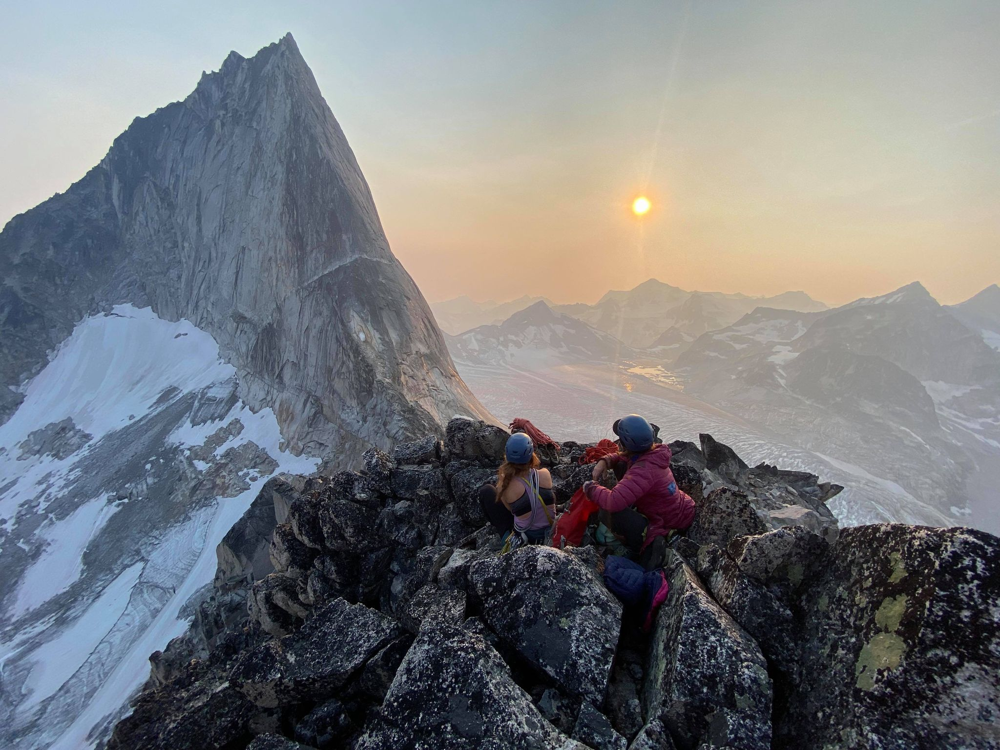

Programmer Artist
Projects


About Nat
Visual Arts
Similar to mathematics, what I greatly enjoy about visual arts is the abstraction. It's a beautiful way to connect
ideas, shift perspectives, and deepen your understanding of reflections.
I was fortunate to gain exposure
for my art early on, holding independent exhibits at the ages of 16 and 17 and being featured in two newspaper articles
in Calgary, AB. However, I took several years to step back, foster a deeper connection to my art, and reevaluate my
relationship with it. Now, with a clearer vision of what I want, I am working towards showcasing my work once again.
You can explore more of my work on my art website: http://www.natalieslaba.com.

Outdoors
I love being outside, especially when engaging in sports that challenge and humble me. In recent years, I've become very passionate about climbing. I still feel like a beginner, which I love because there's always room to climb harder, improve, and learn more; there seems to be no mastery. It's a beautiful and humbling experience, knowing there is so much potential for growth. Additionally, I enjoy backcountry skiing and finding other ways to immerse myself in the mountains."
